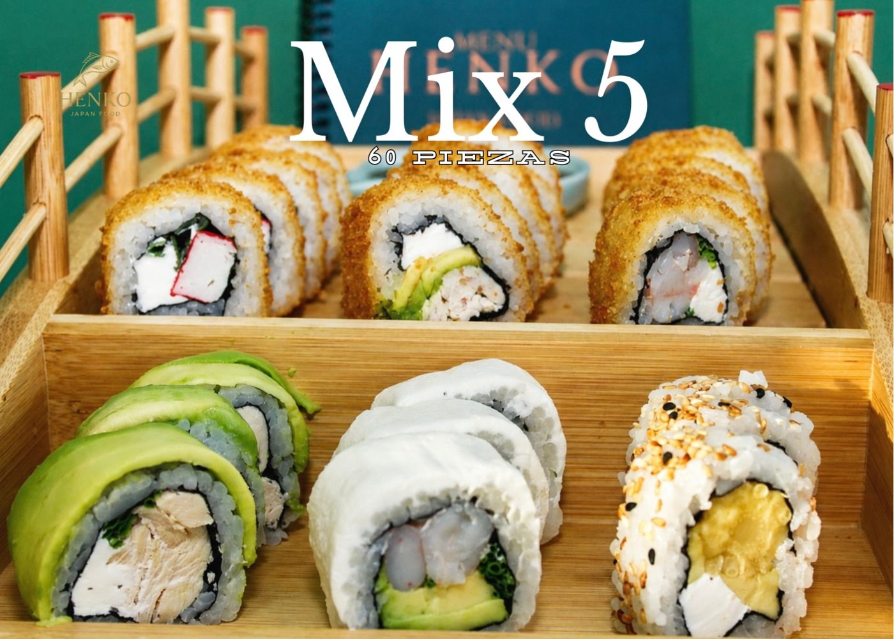
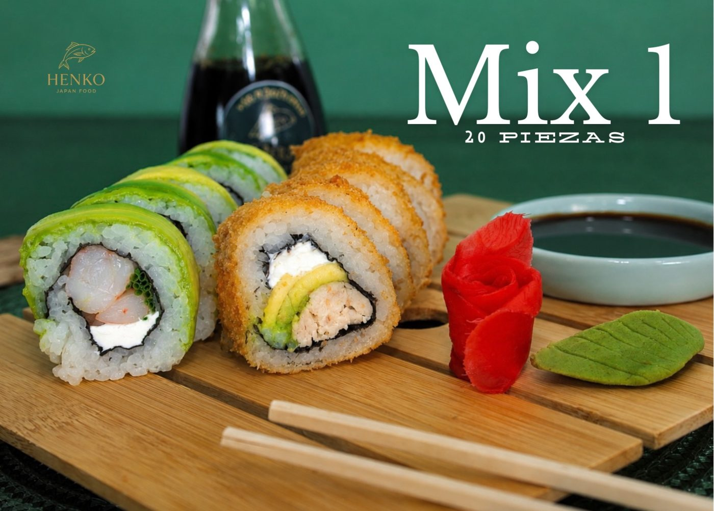
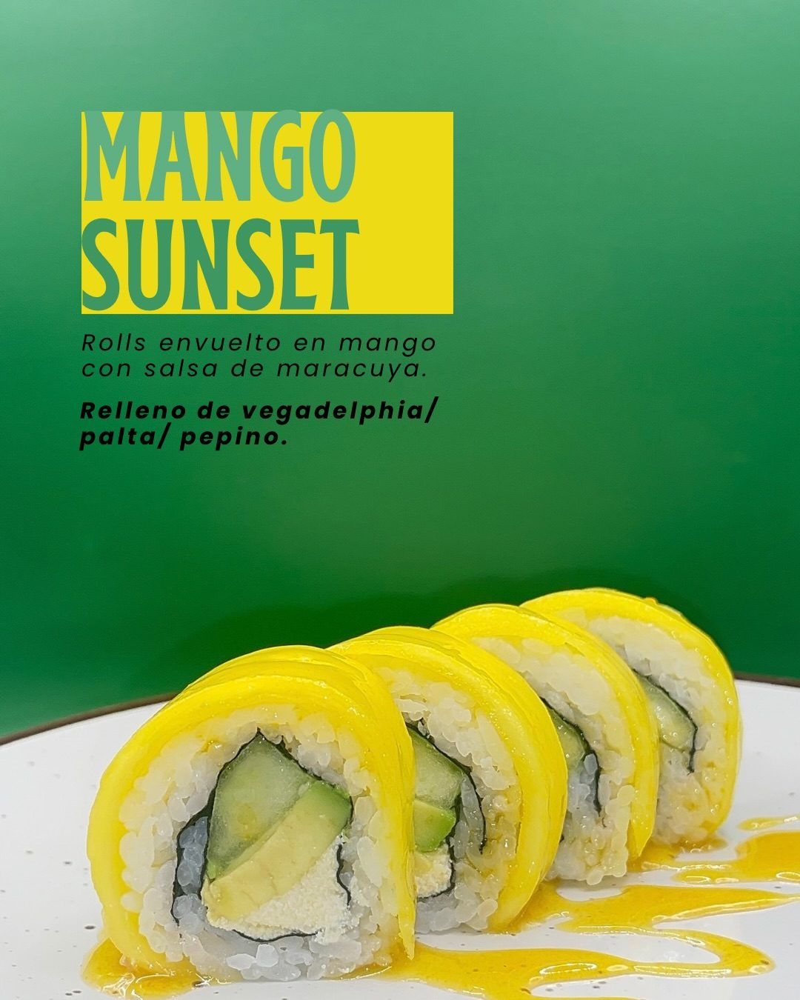
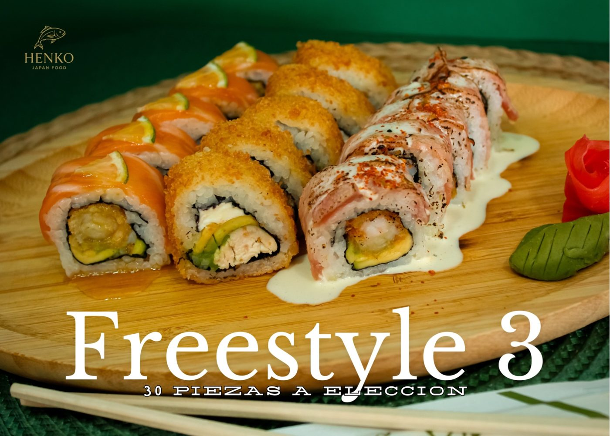

Henko Japan Food
Comida japonesa y fusión · La Pintana
Sushi, ceviches, wok y gyosas en La Pintana y Puente Alto, con opciones 100% veganas.
Ver promociones y especialidades
Juanita 12766, La Pintana · 91 opiniones en Google · 4,9 ★
Promociones y especialidades
Mix 1 · 20 piezas
10 Avocado Ebi · 10 Furai Tori
Mix 2 · 30 piezas
10 Avocado Kani · 10 Furai Ebi · 10 California en sésamo Tori
Mix 3 · 30 piezas veggie Vegano
Opción vegana: 10 Avocado Light · 10 Furai Mush · 10 California Palmo
Mix 4 · 40 piezas
10 Avocado Tori · 10 Ebi Cheese · 10 Furai Tori · 10 Furai Kani
Mix 5 · 60 piezas Para compartir
10 Avocado Tori · 10 Ebi Cheese · 10 California Light · 10 Furai Tori · 10 Furai Kani · 10 Furai Ebi
Freestyle 2 · 20 piezas
A elección (no incluye rolls sin arroz). Te sugerimos los Rolls Umami.
Freestyle 3 · 30 piezas
A elección (no incluye rolls sin arroz). Te sugerimos los Rolls Umami.
Full Furai · 30 piezas
Fritas a elección (no incluye rolls sin arroz).
Rolls Umami De la casa
Los de la casa, también en versión 100% vegana.
Mango Sunset
Roll envuelto en mango con salsa de maracuyá, relleno de vegadelphia, palta y pepino.
Citrus
Fresco y cítrico, con salsa teriyaki o maracuyá a elección.
Wok, yakisoba y yaki udon
Agridulces, de lo más recomendado por sus clientes.
Ceviches y chirashi
Ceviches frescos y chirashi.
Gyosas y snack
Para picar o acompañar.
Las promociones que el local publica en su Instagram. Los valores se confirman al pedir por WhatsApp.



Lo que dicen
“Excelente servicio, no tardan más de 30 minutos en entregar los pedidos a domicilio, todo llega calentito, muy rico y los precios son geniales.”
Saray V., en Google
“Recomiendo el yakisoba y el yaki udon, son agridulces y deliciosos. El sushi tiene sabores clásicos y nuevos. 10/10.”
Catalina A., en Google
“Sin lugar a dudas es mi lugar favorito de sushi, además de la gran variedad que tienen en productos.”
Geraldine S., en Google
Visítanos
| Lunes a jueves | 12:00 a 22:30 |
|---|---|
| Viernes y sábado | 12:00 a 23:00 |
| Domingo | Cerrado |
- Juanita 12766, La Pintana
- Retiro y despacho a domicilio en La Pintana y Puente Alto
- Medios de pago: se confirman al pedir
- +56 9 3423 0919
- Instagram @henkojapanfood